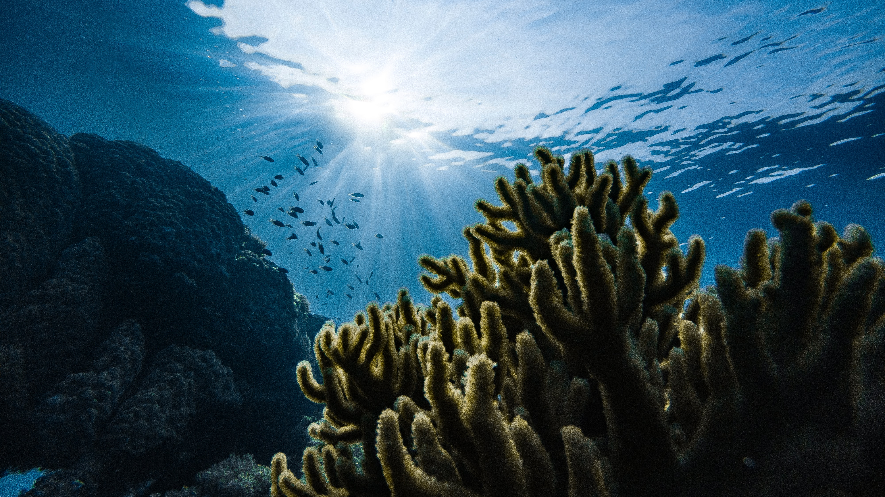

Un millón de conexiones
Un millón de conexiones
Historia
Tú, cuida el agua, nace el año 2022 ante la crisis climática y las nulas esperanzas de que las empresas tomen consciencia del daño medioambiental que generan, con el fin de informar y empoderar a las personas respecto al medioambiente y sus recursos.


La información es poder
La hiperconexión nos ha permitido llegar a personas de todos los continentes y reunirnos sin importar las fronteras, con un solo fin, el agua y la vida en ella.